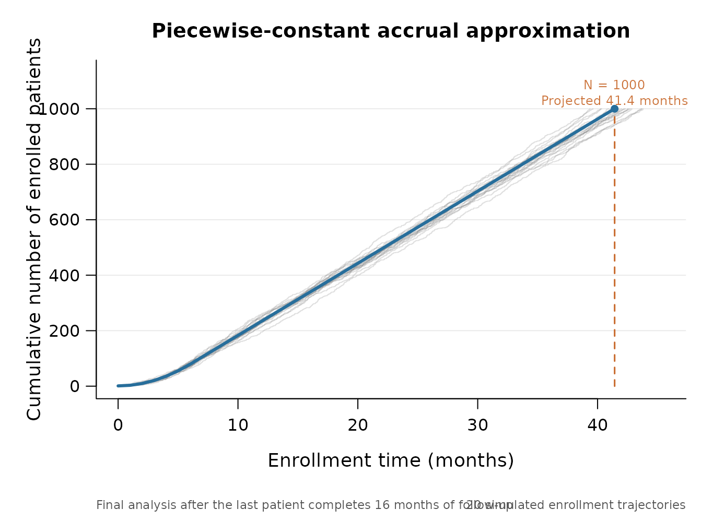
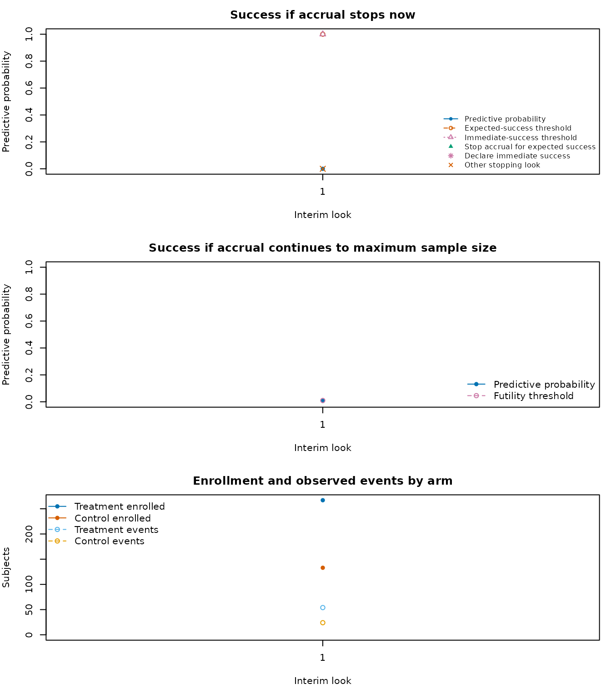

ANTHEM-HFrEF: a published adaptive survival design
Source:vignettes/anthem-hfref.Rmd
anthem-hfref.RmdThe ANTHEM-HFrEF pivotal study is a published example of Bayesian predictive sample-size adaptation paired with a conventional frequentist final analysis. The trial compared vagal nerve stimulation (VNS) plus guideline-directed medical therapy (GDMT) with GDMT alone in patients with heart failure and reduced ejection fraction. It was registered as NCT03425422, its design was published by Konstam et al. (2019), and its results were published by Konstam et al. (2026).
This vignette maps the morbidity and mortality component of the
planned design to goldilocks. It is an explicit
approximation, not a reconstruction or independent validation of the
sponsor’s analysis. The public protocol, statistical analysis plan
(SAP), and Adaptive Design Report (ADR) disclose substantially more
detail than the journal articles alone, including the predictive model,
priors, simulation profiles, and reference operating characteristics.
Even with those documents, differences between the sponsor’s design and
the analyses currently available in goldilocks remain
important and are identified below.
Clinical question and planned analysis
ANTHEM-HFrEF randomized patients 2:1 to VNS plus GDMT or GDMT alone. The primary efficacy endpoint was time from randomization to cardiovascular death or first heart-failure hospitalization. The planned maximum sample size was 1,000 patients, and the final primary analysis was a one-sided log-rank test. Superiority required a one-sided P value no larger than 0.019. That nominal level was calibrated by simulation so that the overall one-sided type I error, including the adaptive decisions, did not exceed 0.025.
At an interim update, the design calculated two predictive probabilities:
- \mathrm{PPS}_n: probability that the final log-rank test would succeed if enrollment stopped at the current sample size and follow-up continued;
- \mathrm{PPS}_{\mathrm{max}}: probability that the final log-rank test would succeed if enrollment continued to 1,000 patients.
Futility monitoring began at the first update, nominally at 400 randomized patients, and stopped the trial if \mathrm{PPS}_{\mathrm{max}} < 0.01. Expected-success monitoring began at 500 patients and stopped enrollment if \mathrm{PPS}_n > 0.95. Enrollment-based updates then recurred after every additional 100 patients through 1,000. The reported 400-patient update also required at least 300 patients to have nine months since randomization, and the design included additional futility updates four and eight months after the last patient was randomized.
The asterisk on 400 denotes the additional nine-month-information condition. The chart focuses on the morbidity and mortality sample-size rule; the trial also had safety, symptom, function, and regulatory decision criteria that are outside this package example.
Planned design versus operational history
The adaptive design and what actually happened must be kept separate. The registry reports 533 randomized patients. The final report excluded one incorrect randomization from the intent-to-treat population, leaving 532 evaluable randomized patients. After the second interim analysis, the data monitoring committee recommended continuing the trial unchanged, but the sponsor stopped enrollment and closed the program for reasons outside the prespecified efficacy and futility rules. The published primary endpoint was neutral (hazard ratio 0.84, one-sided P = 0.115). Nothing in the simulations below represents or attempts to reproduce that operational decision or the observed patient data.
Source and status of every modeled input
The status labels have the following meanings:
- reported: stated numerically in a public primary source;
- inferred: calculated from, or used to encode, reported information;
- assumed: selected for this runnable package example;
- unavailable: needed for exact reproduction but not publicly supplied.
| Input | Value | Status | Source and mapping |
|---|---|---|---|
N_total |
1000 | reported | ADR Sections 1.2 and 3 |
interim_look |
400, 500, 600, 700, 800, 900 | reported | ADR Section 3; maximum N is not an
interim_look in goldilocks
|
end_of_study |
16 months (69.33 weeks) | reported | ADR Sections 1.4.1 and 3.3 |
rand_ratio |
1 control : 2 treatment | reported | ADR Section 1.2; named package values identify control and treatment |
block |
3 | assumed | ADR reports varying blocks of 3, 6, or 9; a fixed block of 3 is the closest available specification |
lambda, lambda_time
|
Six-step ramp to 26 patients/month | inferred | ADR Sections 5.2 and 7 report a six-month ramp to a peak of 26/month |
cutpoints |
6 and 12 months | reported | ADR Section 2.1 reports 0-6, 6-12, 12-18, and >18 month intervals; the 16-month package horizon uses the first two cut-points |
generation_cutpoints |
12 months | reported | ADR Table 5 uses 0-12, 12-24, and >24 month generating intervals; only the 12-month cut-point precedes the 16-month horizon |
hazard_control |
0.00828, 0.00240 events/week | reported | ADR Table 5, using its two generating hazards that apply before the 16-month horizon |
hazard_treatment |
0.70 x control hazard | inferred | ADR Sections 5.1 and 7 report the target hazard-ratio scenario |
prop_loss |
0.10 | reported | ADR Sections 5.3 and 7.2 |
prior_surv |
Gamma shapes 1; rates 1/0.0069, 1/0.0069, 1/0.0035 | reported | ADR Table 1; goldilocks applies these
independent priors to both arms |
alternative |
less | reported | ADR Equation 1 defines lower treatment hazard as benefit |
h0 |
0 | reported | ADR Equation 1 uses equality of survival distributions |
Fn |
0.01 at every modeled look | reported | ADR Section 3.2 |
Sn |
1.00 at N=400; 0.95 at N=500,…,900 | inferred | ADR Section 3.3; 1.00 disables package success stopping at N=400 |
prob_ha |
0.981 | inferred | 1 minus the reported one-sided P-value threshold of 0.019 |
method |
logrank | reported | ADR Section 1.4.1 |
imputed_final |
FALSE | inferred | The reported final analysis uses observed right-censored data |
N_impute |
300 evaluated | assumed | Illustrative setting; ADR Section 2.3.3 specifies at least 10,000 draws for actual interim analyses and 1,000 within design simulations |
N_trials |
20 per evaluated scenario | assumed | Illustrative study uses 20 per scenario; ADR Section 5.5 used 1,000 trials per treatment-benefit scenario and 10,000 per null scenario |
Event-time and accrual assumptions
The ADR’s control-arm simulation profile with a 35% one-year event probability used weekly hazards 0.00828 through month 12, 0.00240 from months 12 to 24, and 0.00012 thereafter. This profile implies a three-year event probability close to the 43% planning value summarized in the final paper:
weeks_per_month <- 52 / 12
sponsor_control_hazard_week <- c(0.00828, 0.00240, 0.00012)
sponsor_interval_length_week <- rep(52, 3)
control_event_probability_3y <- 1 - exp(-sum(
sponsor_control_hazard_week * sponsor_interval_length_week
))
data.frame(
Quantity = c("One-year control event probability", "Three-year control event probability"),
Value = c(
1 - exp(-0.00828 * 52),
control_event_probability_3y
)
)
#> Quantity Value
#> 1 One-year control event probability 0.3498551
#> 2 Three-year control event probability 0.4297041The data-generating and predictive models use different partitions. We retain the predictive cut-points at 6 and 12 months and the generating cut-point at 12 months. The reported 18-month predictive cut-point and 24-month generating cut-point fall beyond this example’s 16-month subject-level horizon, so neither can affect an event time or imputation and both are omitted.
analysis_cutpoints_week <- c(6, 12) * weeks_per_month
generation_cutpoints_week <- 12 * weeks_per_month
end_of_study_week <- 16 * weeks_per_month
hazard_control_week <- c(0.00828, 0.00240)
hazard_treatment_target_week <- 0.70 * hazard_control_week
hazard_treatment_null_week <- hazard_control_week
prior_surv_approx <- rbind(
shape = c(1, 1, 1),
rate = c(1 / 0.0069, 1 / 0.0069, 1 / 0.0035)
)The reported accrual simulation used a Poisson process with a
six-month ramp to a peak of 26 patients per month.
goldilocks supports piecewise-constant rather than linear
enrollment rates, so the code uses six one-month steps at the midpoints
of the reported linear ramp. The construction preserves the expected
enrollment during the six-month ramp.
peak_rate_per_month <- 26
ramp_rate_per_month <- c(
peak_rate_per_month * seq(1, 11, by = 2) / 12,
peak_rate_per_month
)
ramp_change_week <- (1:6) * weeks_per_month
ramp_rate_per_week <- ramp_rate_per_month / weeks_per_month
accrual_table <- data.frame(
`Trial-calendar interval` = c(
paste0("Month ", 1:6),
"After month 6"
),
`Approximate patients/month` = ramp_rate_per_month,
`Patients/week supplied to goldilocks` = ramp_rate_per_week,
check.names = FALSE
)
knitr::kable(accrual_table, digits = 3)| Trial-calendar interval | Approximate patients/month | Patients/week supplied to goldilocks |
|---|---|---|
| Month 1 | 2.167 | 0.5 |
| Month 2 | 6.500 | 1.5 |
| Month 3 | 10.833 | 2.5 |
| Month 4 | 15.167 | 3.5 |
| Month 5 | 19.500 | 4.5 |
| Month 6 | 23.833 | 5.5 |
| After month 6 | 26.000 | 6.0 |
The same approximation can be inspected with the package’s enrollment plot. The expected curve, 20 illustrative Poisson trajectories, the maximum sample size, and the package’s per-participant follow-up setting are shown on the more interpretable month scale. Interim sample sizes are listed in the input table above.
plot_enrollment(
lambda = ramp_rate_per_month,
lambda_time = 1:6,
N_total = 1000,
end_of_study = 16,
n_sim = 20,
seed = 3425423,
time_unit = "months",
main = "Piecewise-constant accrual approximation"
)
A one-trial goldilocks approximation
The expected-success threshold is set to 1 at the 400-patient look.
Since the package stops only when its predictive-probability point
estimate is greater than Sn, this disables expected-success
stopping at that look while retaining the futility calculation.
prob_ha = 1 - 0.019 = 0.981 maps the final one-sided
log-rank criterion into the package convention of analyzing
1 - P.
anthem_common <- list(
cutpoints = analysis_cutpoints_week,
generation_cutpoints = generation_cutpoints_week,
N_total = 1000,
lambda = ramp_rate_per_week,
lambda_time = ramp_change_week,
interim_look = seq(400, 900, by = 100),
end_of_study = end_of_study_week,
prior_surv = prior_surv_approx,
block = 3,
rand_ratio = c(control = 1, treatment = 2),
prop_loss = 0.10,
alternative = "less",
h0 = 0,
Fn = rep(0.01, 6),
Sn = c(1, rep(0.95, 5)),
prob_ha = 0.981,
N_impute = 300,
mc_conf_level = 0.95,
empty_interval = "prior",
method = "logrank",
imputed_final = FALSE
)The Bayesian piecewise-exponential posterior supplies predictive event times at each interim look. Each completed predictive data set is then judged by the frequentist one-sided log-rank test. Thus, Bayesian prediction determines whether the current sample size appears adequate or futile, while the final success criterion remains frequentist.
set.seed(3425422)
anthem_trial <- do.call(survival_adapt, c(
anthem_common,
list(
hazard_treatment = hazard_treatment_target_week,
hazard_control = hazard_control_week,
return_trace = TRUE
)
))
anthem_trial$summary
#> prob_threshold margin alternative N_treatment N_control N_enrolled N_max
#> 1 0.981 0 less 667 333 1000 1000
#> post_prob_ha est_final ppp_success stop_futility stop_immediate_success
#> 1 0.9568078 NA 0.07666667 0 0
#> stop_expected_success trial_success stopping_reason decision_time
#> 1 0 FALSE maximum_sample_size 255.5593
#> accrual_stop_time analysis_ready_time planned_completion_time
#> 1 186.2259 255.5593 255.5593
#> followup_person_time peak_active_followup
#> 1 51978.65 318The trace shows the predictive quantities only at looks reached before a stop. The 400-patient success threshold of 1 is the package encoding of a futility-only look.
trace_display <- anthem_trial$trace[c(
"planned_N",
"calendar_time",
"events_treatment",
"events_control",
"ppp_stop_now",
"success_threshold",
"ppp_success_at_max",
"futility_threshold",
"decision"
)]
knitr::kable(
trace_display,
digits = 3,
col.names = c(
"N",
"Time",
"VNS events",
"Control events",
"PPSn",
"Success cut",
"PPSmax",
"Futility cut",
"Decision"
)
)| N | Time | VNS events | Control events | PPSn | Success cut | PPSmax | Futility cut | Decision |
|---|---|---|---|---|---|---|---|---|
| 400 | 85.412 | 49 | 23 | 0.003 | 1.00 | 0.053 | 0.01 | continue |
| 500 | 100.897 | 64 | 36 | 0.040 | 0.95 | 0.197 | 0.01 | continue |
| 600 | 117.652 | 88 | 43 | 0.007 | 0.95 | 0.040 | 0.01 | continue |
| 700 | 136.312 | 109 | 61 | 0.077 | 0.95 | 0.267 | 0.01 | continue |
| 800 | 153.178 | 127 | 75 | 0.197 | 0.95 | 0.333 | 0.01 | continue |
| 900 | 171.523 | 148 | 83 | 0.077 | 0.95 | 0.133 | 0.01 | continue |
plot_trial_trace(anthem_trial)
This single simulated path is illustrative. Its selected sample size and final result are random and are not estimates of power or type I error.
Small null and alternative simulation
The next two scenarios are intentionally small illustrative simulations: 20 trials under the null hazard ratio of 1 and 20 under the target hazard ratio of 0.70. The summary reports a Monte Carlo standard error and 95% Monte Carlo interval for every probability, making the numerical imprecision visible.
The evaluated design uses 300 predictive draws per look to keep the vignette computation manageable. This is not a precision recommendation: it gives the predictive-probability estimate a resolution of about 0.0033. The sponsor used 1,000 draws per look in its operating-characteristic simulations and at least 10,000 for actual interim analyses. The package reports exact bounds and Monte Carlo standard errors as diagnostics, but decisions use the point estimate.
anthem_alt <- do.call(sim_trials, c(
anthem_common,
list(
hazard_treatment = hazard_treatment_target_week,
hazard_control = hazard_control_week,
N_trials = 20,
ncores = 2,
seed = 3425430
)
))
anthem_null <- do.call(sim_trials, c(
anthem_common,
list(
hazard_treatment = hazard_treatment_null_week,
hazard_control = hazard_control_week,
N_trials = 20,
ncores = 2,
seed = 3425431
)
))
anthem_oc <- summarise_sims(list(
"Null: HR = 1.00" = anthem_null,
"Target: HR = 0.70" = anthem_alt
))
oc_display <- anthem_oc[c(
"scenario",
"n_used",
"power",
"power_mcse",
"power_mc_lower",
"power_mc_upper",
"stop_success",
"stop_futility",
"mean_N",
"mean_N_mcse"
)]
knitr::kable(oc_display, digits = 3)| scenario | n_used | power | power_mcse | power_mc_lower | power_mc_upper | stop_success | stop_futility | mean_N | mean_N_mcse |
|---|---|---|---|---|---|---|---|---|---|
| Null: HR = 1.00 | 20 | 0.10 | 0.067 | 0.028 | 0.301 | 0.05 | 0.7 | 735 | 49.351 |
| Target: HR = 0.70 | 20 | 0.75 | 0.097 | 0.531 | 0.888 | 0.50 | 0.0 | 830 | 45.940 |
For the corresponding sponsor scenario - 35% control event probability at one year, hazard ratio 0.70, peak accrual 26/month, and 10% dropout - the ADR reported power 0.836 and mean sample size 833. Under the null with the same control profile it reported type I error 0.021 and mean sample size 748. Those results came from the sponsor’s modified FACTS analysis, 1,000 alternative trials, 10,000 null trials, and 1,000 predictive iterations per simulated interim. They are reference targets, not values that a 20-trial vignette simulation can meaningfully validate.
The journal article summarized the same planning exercise more broadly as approximately 80% power for hazard ratio 0.70, a three-year control event rate of about 43%, 26 patients/month, and 10% dropout. The small package results may differ because of Monte Carlo error and the structural approximations described next.
Differences from the sponsor’s design
Several distinctions are consequential:
-
Predictive model. The ADR uses common control
baseline hazards and one shared treatment log hazard ratio with a weakly
informative normal prior.
goldilocksestimates independent piecewise hazards for the two arms. Arm-specific Gamma priors can represent the reported control-hazard prior, but the joint sponsor parameterization and its shared treatment-effect prior cannot. - Look timing. Package looks occur when an enrollment count is reached. It cannot additionally require 300 patients with nine months since randomization at the first look, nor schedule futility updates four and eight months after accrual ends.
-
Follow-up horizon.
end_of_studyis a per-subject administrative horizon. The published trial kept all randomized patients under follow-up until the common final visit 16 months after the last randomization, so earlier participants could contribute more than 16 months. -
Dropout. The ADR generated independent exponential
dropout times giving 10% cumulative dropout by 16 months.
prop_loss = 0.10selects a fixed proportion for loss to follow-up and samples censoring before each selected subject’s potential event or administrative time. - Accrual and randomization. The stepwise accrual approximation replaces a linear six-month ramp. The package also cannot reproduce geographic and clinical stratification or randomly varying block sizes 3, 6, and 9.
-
Monte Carlo diagnostics. The public ADR defines
each predictive probability as the proportion of imputed datasets in
which the final test succeeds, and compares that point estimate with
0.95 or 0.01.
goldilocksuses the same strict point-estimate comparisons. With 300 imputations, for example, expected-success stopping requires at least 286 successes and a futility proportion below 0.01 permits zero, one, or two successes. The package additionally reports Monte Carlo standard errors and exact one-sided bounds in the decision trace, but these are diagnostic only.
These differences concern the statistical and operational scope of the two designs. They are why the vignette compares broad behavior and operating characteristics without claiming exact calibration.
References
Broglio KR, Connor JT, Berry SM. Not too big, not too small: a Goldilocks approach to sample size selection. Journal of Biopharmaceutical Statistics. 2014;24(3):685-705. doi:10.1080/10543406.2014.888569.
ClinicalTrials.gov. Autonomic Regulation Therapy to Enhance Myocardial Function and Reduce Progression of Heart Failure With Reduced Ejection Fraction. NCT03425422.
Konstam MA, Udelson JE, Butler J, et al. Impact of autonomic regulation therapy in patients with heart failure: ANTHEM-HFrEF pivotal study design. Circulation: Heart Failure. 2019;12:e005879. doi:10.1161/CIRCHEARTFAILURE.119.005879.
Konstam MA, Udelson JE, Mann DL, et al. Vagal nerve stimulation in patients with heart failure and reduced ejection fraction: the ANTHEM-HFrEF trial. Journal of the American College of Cardiology. 2026;87(25). doi:10.1016/j.jacc.2026.03.040.
LivaNova USA. ANTHEM-HFrEF Clinical Investigation Plan, version 9.2, 1 November 2021. Public JACC supplement.
LivaNova USA. ANTHEM-HFrEF Statistical Analysis Plan, version 2.0, 8 February 2022. Public JACC supplement.
Berry Consultants. ANTHEM-HFrEF Pivotal Trial Adaptive Design Report, version 3.2, 13 October 2021. Public JACC supplement.
LivaNova USA. Statistical Analysis Plan Amendment - ANTHEM-HFrEF Pivotal Study, version 1.0, 16 May 2023. Public JACC supplement.